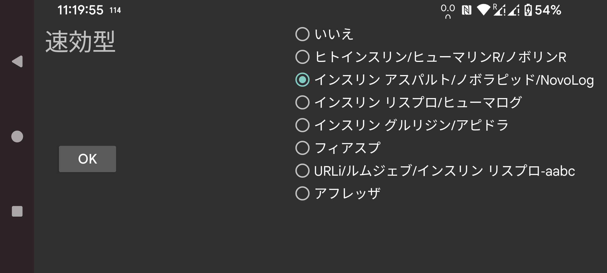

ar de es hi it ja nl ru tr uk uz en
IOB は、過去のインスリン投与量からどれだけのインスリンが残っているかの指標です。Juggluco 9.2.0 より前は、インスリンアスパルトの血中インスリン濃度曲線が IOB の推定に使われていました。現在ではインスリンの種類を指定でき、Juggluco はそのインスリン種類に固有の血中インスリン濃度曲線を使用します。ラベルが速効型インスリンを表さない場合は なし を、それ以外はインスリンの種類を指定します。選択肢は次のとおりです:
ヒトインスリン/Humulin R/Novolin R
インスリンアスパルト/NovoRapid/NovoLog
インスリンリスプロ/Humalog
インスリングルリジン/Apidra
Fiasp
URLi
Afrezza
IOB の式の決定方法については以下のページに記載されています: https://www.juggluco.nl/Juggluco/IOB/overview.html
記載されていない速効型インスリン種類をご存知の場合は、メールでお知らせください。